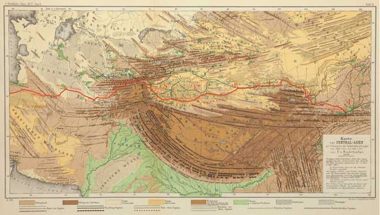
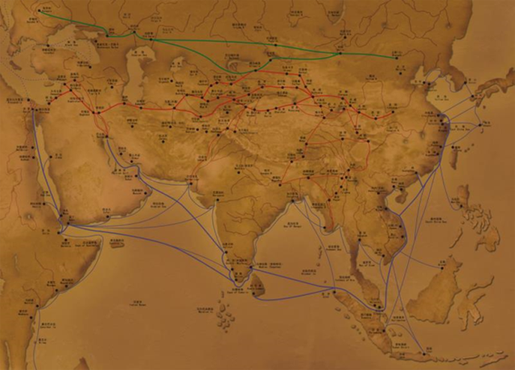
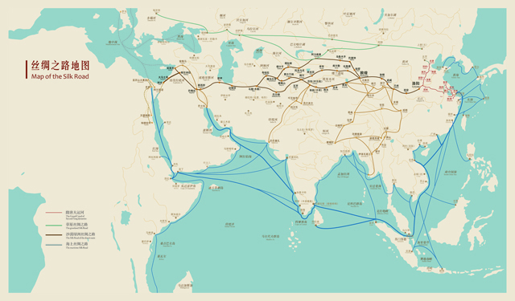

The Silk Road usually refers to the Commercial Route in Northern Eurasia, in contrast to the ancient Tea Horse Road in the south. During the Western Han Dynasty, Zhang Qian and during the Eastern Han Dynasty, Ban Chao sent envoys to open up the Western Regions, with Luoyang as the starting point. There are also claims that Xi'an was the starting point.
During the Western Han Dynasty (202 BC-8 AD) , Zhang Qian was sent on an expedition to the Western Regions, starting from Chang'an (now Xi'an), passing through Gansu and Xinjiang, and reaching Central and West Asia, connecting the Mediterranean countries through land routes (also known as the "Northwest Silk Road" to distinguish it from the other two transportation routes later named "Silk Road"). Among the goods traded through this long road, Chinese silk is the most representative, hence the name "Silk Road". The Silk Road was not only a trade route for ancient Asia and Europe to exchange goods and services, but also a friendly route for promoting exchanges between Asian and European countries and China, and communicating Eastern and Western cultures. Some famous figures in history, such as Zhang Qian, who went on a diplomatic mission to the Western Regions, Ban Chao, who defected to the military, and Xuanzang, who went to the West to obtain Buddhist scriptures, have stories related to this road.
Since Zhang Qian and Ban Chao opened up the road to the Western Regions, commercial exchanges between China, Central Asia, and Europe have rapidly increased. Through this thoroughfare that runs through Asia and Europe, Chinese silk products, such as silk, silk, damask, satin, and silk, are continuously transported to Central Asia and Europe. Therefore, the Greeks and Romans call China the Celestian State and the Chinese the Celestians. The so-called 'Seris' means' silk'. At the end of the 19th century, German geologist Richthofen praised the east-west road that Zhang Qian opened up and walked on as the "Silk Road". Later, historians collectively referred to the trade routes that connected the East and the West as the "Silk Road".
Regarding the Silk Road within China, Chinese scholar Xu Pingfang mentioned four routes in her article "Archaeological Observations of the Silk Road within China". Firstly, the Han and Tang capitals (Chang'an and Luoyang) passed through the Hexi Corridor to the Western Regions, which was the main route of the Silk Road. It was known as the desert route of the Silk Road because it passed through the Taklamakan Desert in Xinjiang and several desert areas in Central Asia; The second is the grassland Silk Road in northern China; Third, the Southwest Silk Road in Sichuan, Yunnan and Xizang of China; The fourth is the Maritime Silk Road along the southeast coast of China.
The earliest proponent of the Maritime Silk Road can be considered as French sinologist Shawan. In 1903, he mentioned in his book "Historical Materials of the Western Turkic Empire" that the Silk Road can be divided into two routes: land and sea. In 1968, Takatoshi Misaki of Japan published "Exploring the Maritime Silk Road". In China, Chen Yan was one of the earliest scholars to pay attention to and study the Maritime Silk Road. He officially proposed it in 1980 and later published a series of articles on the Maritime Silk Road. As for the specific direction of the Maritime Silk Road, it includes Italy, Greece, Türkiye, Egypt, Oman, Pakistan, India, Sri Lanka, Thailand, Malaysia, Indonesia, Brunei, the Philippines, China, South Korea and Japan.
There is currently no clear statement regarding the proposal of the Grassland Silk Road. Western scholars often refer to it as the Grassland Road, which is actually a natural grassland passage. Because in the geographical environment of the Eurasian continent, North Asia is covered with cold tundra and subarctic coniferous forests, while Central Asia has towering mountains and Gobi deserts. Only in the mid latitudes between 40 and 50 degrees north latitude are it conducive to human east-west transportation. This area happens to be a grassland area, which can connect Central Asia and Eastern Europe to the west, Xinjiang to the south across Ale Mount Taishan Mountain, and Central China to the southeast.
Regarding the Silk Road within China, Chinese scholar Xu Pingfang mentioned four routes in her article "Archaeological Observations of the Silk Road within China". Firstly, the Han and Tang capitals (Chang'an and Luoyang) passed through the Hexi Corridor to the Western Regions, which was the main route of the Silk Road. It was known as the desert route of the Silk Road because it passed through the Taklamakan Desert in Xinjiang and several desert areas in Central Asia; The second is the grassland Silk Road in northern China; Third, the Southwest Silk Road in Sichuan, Yunnan and Xizang of China; The fourth is the Maritime Silk Road along the southeast coast of China.
From the perspective of cultural exchange channels between the East and the West on the Eurasian continent, there are currently three recognized Silk Roads: the Desert Oasis Silk Road, the Maritime Silk Road, and the Grassland Silk Road. The scholar who truly described the three Silk Roads in their entirety is Huang Shijian, a renowned expert in the history of Sino foreign exchanges. In 1991, he drew a network style map of the entire Silk Road for the exhibition hall of the China Silk Museum. Huang Shijian wrote a special article discussing this map, which he agreed to include in Zhao Feng's "General History of China's Silk Road".
The Southwest Silk Road runs from Sichuan to Xizang, through Nepal to India, or through Dali to Myanmar. But afterwards, it can be divided into two routes, one can travel north to reach Central Asia and integrate into the Desert Silk Road, and the other can travel south to connect with the Maritime Silk Road.
The ancient Silk Road greatly promoted the circulation of goods and took the lead in achieving trade and economic exchanges between the East and the West. The Silk Road was the lifeline of ancient trade between the East and the West. Through the Silk Road, Chinese goods such as silk, tea, porcelain, lacquerware, etc. were continuously exported to countries along the route; Jewelry, medicinal herbs, spices, as well as various crops such as grapes, sesame, walnuts, carrots, and cucumbers from Central Asia, West Asia, and Europe are constantly entering China.
Silk is the most important high-end commodity in commodity trading among countries along the Belt and Road. Silk originating from China was very precious in ancient Western countries. In ancient Greece, buying and wearing silk became a symbol of wealth and status, and even in the 5th century BC, the "goddess of fate" in the Parthenon temple and the Garibaldi statue of Erich wore transparent Chinese silk robes. During the reign of Antony, Chinese silk was sold several times to Rome and became as valuable as gold. During the Ahmen dynasty, silk products and raw silk were the bulk commodities traded between Persian and Chinese merchants. Persians used the traditional Sassanian textile methods for reprocessing, giving Chinese silk new vitality. In Central Asia, merchants from Sogdiana (now Tajikistan and Uzbekistan) were proficient in silk trade. In the 4th century AD, many Sogdiana merchants mainly engaged in silk business gathered in Chang'an and other places in China. In order to compete for the benefits of silk trade with China, in 571 AD, Byzantium allied with the Turks and Persia in a 20-year long "Silk War".
Around the 5th century AD, Chinese tea was gradually introduced to South Asia, Central Asia, and West Asia through the Silk Road on land and sea. Once introduced in the 15th century, it quickly became popular throughout Europe. The tea trade has significantly increased the trade income of countries along the route, driving the prosperity of the economy and the rapid development of related industries along the route, and the transit trade has also made significant progress. Tea changed the lifestyle of medieval Europeans, and the tea trade influenced the capital and economic system of medieval Europe. Before the 17th century, the vessels commonly used by Central Asia and Europeans were mainly pottery, wooden ware, and gold and silverware. With the massive import of Chinese porcelain, the West not only sparked a "China fever", but also sparked a revolution in daily necessities, leading to the rise of the European porcelain industry and significant changes in traditional production and lifestyle.
The ancient Silk Road promoted the interactive dissemination of science and technology, extensively and profoundly driving production progress and even social change in the countries along the route. The Silk Road is an important platform for scientific and technological exchanges between China and countries along the route. Before the modern industrial revolution in Europe, the the Four Great Inventions and ironmaking and other technologies in ancient China were introduced to the West through the Silk Road, becoming an important factor in promoting the transformation of the capitalist mode of production.
The ancient Silk Road facilitated the exchange of diverse cultures and served as an important link for different countries, races, and civilizations from the East and the West to mutually influence and tolerate each other. The ancient Silk Road and the Maritime Silk Road were civilizations where different ethnic groups and cultures exchanged and integrated with each other. The Silk Road spanned dozens of countries in Asia, Europe, and Africa, connecting and blending ancient civilizations such as China, India, Egypt, Persia, Arabia, Greece, and Rome.
The cultural exchange between the East and the West covers all aspects of social life, such as music, dance, astronomy, calendar calculation, literary language, clothing, and customs. For example, the folk music of countries along the ancient Silk Road spread, influenced, and borrowed from each other. Through organic integration with local music forms and performance techniques, it not only became a representative and symbol of nationalization and regionalization in the countries along the route, but also deeply engraved in various aspects of literature, opera, song and dance accompaniment, folk life, and so on. The pipa, known as the "king of folk music", was introduced to China through the Silk Road from Persia via the Western Regions during the Northern and Southern Dynasties. It not only became the main instrument in the nine part and ten part music during the Sui and Tang dynasties, but also created multiple pipa schools such as the Wuxi School, Pinghu School, Pudong School, Chongming School, as well as famous songs such as "The Song of the Frontier", "The Sunset Flute and Drum", and "Ambush from Ten Sides". Scholars such as Bai Juyi, Yuan Zhen, and Su Shi left behind timeless poems and songs praising the pipa. In the Tang Dynasty, the pipa was introduced from China to Korea, Japan, and Vietnam. The five stringed pipa made of mother of pearl and rosewood, which was introduced from China to Japan, is still collected at Todaiji Temple in Nara, Japan. It can be regarded as a rare treasure in the world's art treasury.
The names of people of different ethnicities and beliefs who were once active on the Silk Road cannot be recorded one by one in history, but there are still many cultural ambassadors whose names will be remembered forever. In 627 AD, Xuanzang traveled 50000 miles westward for 17 years, traveled to more than 110 countries, brought back 657 Buddhist scriptures, translated 75 sutras and commentaries, and can be regarded as the culmination of inheriting the orthodox Buddhist doctrine in India. In 753 AD, Jianzhen, who had successfully crossed the East six times, spread Buddhism and founded a school in Japan. He was praised by the Japanese people as the "father of culture," "ancestor of the Vinaya school," and "ruler of the balance. In the 13th century, Italian traveler and merchant Marco Polo traveled a long way from the Middle East and spent more than 4 years arriving in the capital of Yuan Dynasty in 1275. After traveling in China for 17 years, he wrote "The Travels of Marco Polo", which inspired Europeans' fervent longing for ancient China. At the beginning of the 14th century, the great Arab traveler Ibn Battuta came to China from Morocco in the Horn of Africa and wrote a new chapter in cultural exchange between China and Arab countries. From 1405 to 1433, Zheng He embarked on seven voyages to the Western Ocean, setting sail for 90000 miles and covering more than 30 countries and regions in the Western Pacific and Indian Oceans, spreading Chinese civilization far and wide.
As early as the early 1st century AD, Confucianism had been introduced to Korea, and Confucian classics such as the Book of Songs and the Spring and Autumn Annals became classic reading materials for Koreans. Before the 5th century, Confucianism was introduced to Japan through Korea. According to the "Kojiki", Aji and Wang Ren from Baekje were the earliest Confucian scholars to arrive in Japan. During the Sui and Tang dynasties, Japan sent envoys to the Sui and Tang dynasties, as well as students and monks studying Chinese culture. After returning to Japan, they borrowed the radical parts of Chinese characters and cursive script to create Japanese katakana and hiragana, and Confucian culture spread to all levels of Japanese society.
The exchange, blending, and interaction of cultures have always accompanied the development of the ancient Silk Road. While tightly connecting multiple cultures and civilizations, the Silk Road has formed a unique Silk Road culture and civilization, making immortal contributions to the development of world civilization and human progress.
Click here to return to HOME PAGE
Click here to continue browsing EACH FLOW IS A UNIQUE UNIVERSE